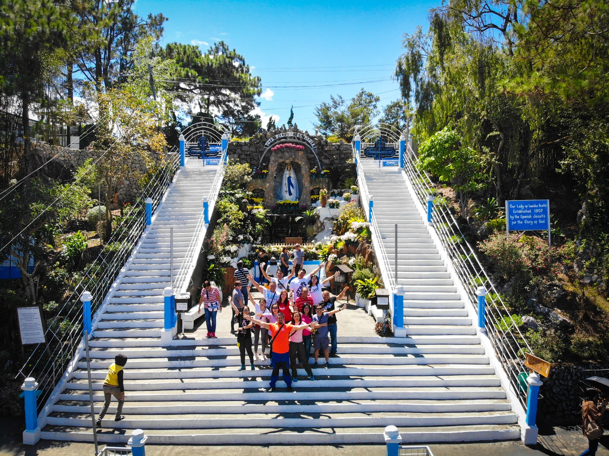

Visitor Information
📍 Location: Dominican Hill Road, Mirador Hill, Baguio City
💰 Entrance Fee: Free
🕕 Best Time to Visit: Early morning or sunset
📌 Highlights: 252-step pilgrimage stairs • Scenic views • Marian shrine
Visit the Lourdes Grotto
A sacred pilgrimage site offering peace, reflection, and a breathtaking view of Baguio City.
About Lourdes Grotto
The Our Lady of Lourdes Grotto is one of Baguio City's most iconic religious landmarks. Devotees climb the 252 steps to reach the image of the Blessed Virgin Mary, symbolizing sacrifice and devotion. From the top, visitors can enjoy a peaceful atmosphere and scenic hilltop views.
Map Location
This interactive map shows the exact location of Lourdes Grotto.
Nearby Attractions
- 🏰 Dominican Hill & Diplomat Hotel
- 🌄 Mirador Heritage & Eco-Spiritual Center
- 🎋 Arashiyama Bamboo Grove
- ☕ Cafés along Mirador Hill
- 🎨 BenCab Museum (10 mins)